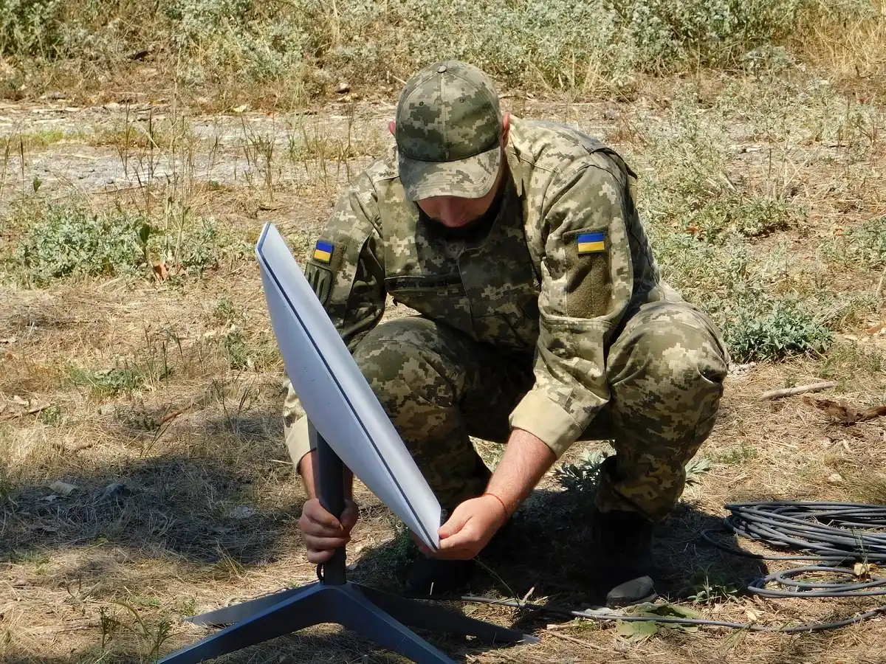
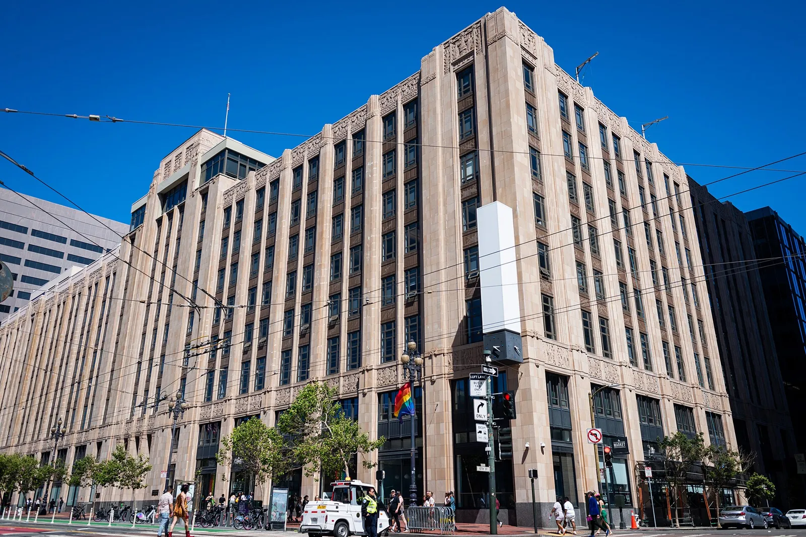
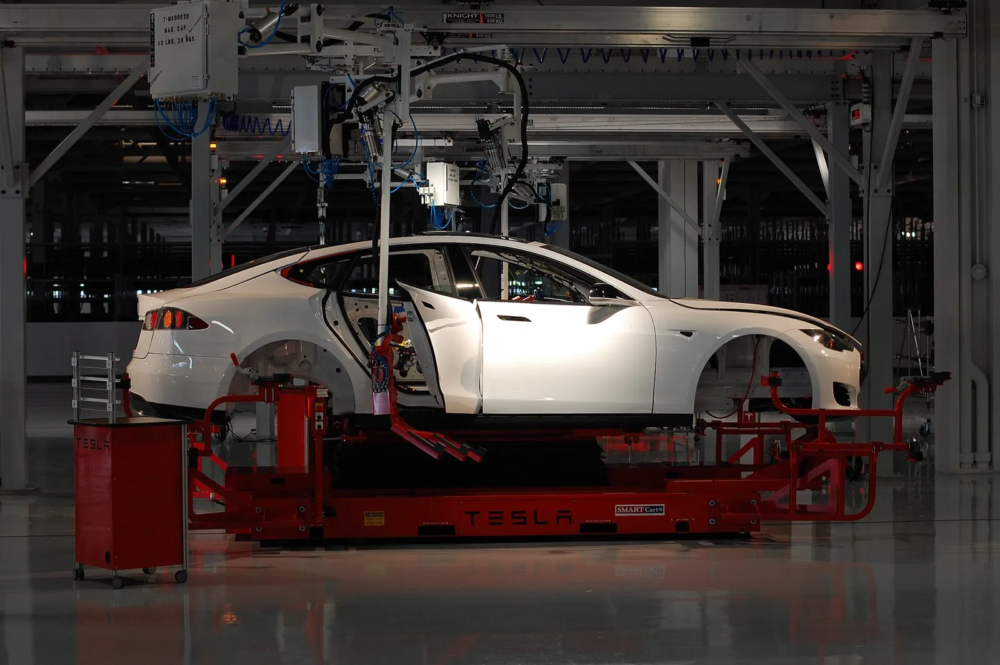

Door Timo Jissink · Voor het eerst gepubliceerd 25 november 2026 · Bijgewerkt · ongeveer 58 minuten lezen
Een overzicht met bronnen van wat Elon Musk deed bij Tesla, SpaceX, Starlink, in energie, bij Neuralink, de Boring Company, OpenAI en PayPal, in de politiek en bij X. Stand: 24 november 2026. Het goede dat vaak wordt vergeten en de sterkste kritiek staan naast elkaar.
Groen: geleverd
Oranje: deels geleverd of later dan aangekondigd
Rood: (nog) niet geleverd
Grijs: omstreden, of een uitspraak van de rechter
De eerste lancering van de Falcon Heavy, 6 februari 2018. Foto: SpaceX, CC0, via Wikimedia Commons
De belangrijkste punten
Door herbruikbare Falcon-raketten werd een lancering naar een baan om de aarde ongeveer twintig keer goedkoper dan met de spaceshuttle. Starship moet nog veel goedkoper worden, maar dat is nog een doel.
Tesla trok de auto-industrie richting elektrisch rijden en zijn laadstekker werd de standaard in Noord-Amerika. BYD verkoopt nu meer volledig elektrische auto's.
Starlink heeft 13,6 miljoen abonnees, ook in oorlogs- en rampgebieden. Dat geeft één bedrijf ook veel macht, zoals in Oekraïne bleek.
Beloofde datums, vooral voor zelfrijden, werden vaak niet gehaald (zie Deadlines). Robotaxi's zonder bestuurder rijden nu in afgebakende zones van acht Amerikaanse steden.
Op zijn politiek, DOGE en zijn leiding over X kwam kritiek, die rechters, controleurs of cijfers vaak bevestigden. Hij zegt dat hij zich “pretty foolish” (behoorlijk dom) voelt over wat hij in 2026 aan de verkiezingen uitgaf.
Hoe ik dit maakte, en fouten melden
Ik heb deze pagina gemaakt op basis van openbare bronnen. Die staan onder elk deel. Ik deed het onderzoek met hulp van een AI-assistent en heb de feiten met die bronnen gecontroleerd. Komt een cijfer van het bedrijf zelf, dan staat dat erbij. Mijn eigen mening staat alleen in het laatste deel, ‘Mijn eigen mening’. Zie je een fout of een nieuwer cijfer? Laat het me weten.
Zo werkt het: elk deel geeft eerst de feiten en daarna de belangrijkste kritiek. Bij elk getal staat de datum. Komt een cijfer van het bedrijf zelf, dan staat dat erbij.
Wat het kan betekenen Elektrische auto's zijn stil, stoten in de straat geen uitlaatgassen uit en zijn per kilometer goedkoper. Steden kunnen daardoor schoner en stiller worden. Als auto's ooit veilig zelf rijden, kunnen mensen die zelf niet kunnen rijden, zoals veel ouderen en mensen met een beperking, op eigen gelegenheid reizen. De andere kant: voor accu's moeten grondstoffen uit de grond worden gehaald. En een elektrische auto is maar zo schoon als de stroom waarmee je hem oplaadt.
Kort gezegd: Tesla maakte elektrische auto's iets wat mensen graag wilden hebben. Het gaf zijn patenten en laadstekker vrij en trok de hele auto-industrie mee richting elektrisch. Tesla deed dat niet alleen, en BYD verkoopt inmiddels meer volledig elektrische auto's dan Tesla.
“Tesla will not initiate patent lawsuits against anyone who, in good faith, wants to use our technology.”
“Tesla begint geen rechtszaak over patenten tegen iemand die onze technologie te goeder trouw wil gebruiken.”
Open patenten (2014)
Op 12 juni 2014 zei Tesla dat het niemand aanklaagt die zijn patenten “te goeder trouw” gebruikt. Er zit wel een voorwaarde aan: wie ze gebruikt, mag Tesla zelf niet aanklagen over patenten of ander intellectueel eigendom, en mag geen namaak verkopen. Het is dus meer een wapenstilstand dan een cadeau.
De laadstekker werd de standaard
Tesla maakte het ontwerp van zijn stekker in november 2022 openbaar. Ford stapte in mei 2023 over. Eind 2023 deed bijna elke grote autofabrikant in Noord-Amerika mee. De Amerikaanse normorganisatie SAE maakte er in september 2024 de officiële standaard J3400 van.
Superchargers voor iedereen
In november 2021 mochten andere merken er voor het eerst laden, op 10 Nederlandse locaties, waaronder Duiven en Hengelo. In oktober 2026 waren er ongeveer 85.000 laadpalen op 9.000 locaties. Op 61.071 daarvan (72%) kunnen ook andere elektrische auto's laden.
Lees meer (nog 2 punten)
Effect op de markt
In 2025 werden wereldwijd meer dan 20 miljoen elektrische auto's verkocht, 25% van alle nieuwe auto's (IEA). Volgens één studie zouden er zonder de open patenten van Tesla ongeveer 33% minder plug-inhybrides zijn. Een andere studie vond dat de komst van Tesla naar China ook de verkoop van Chinese elektrische merken liet groeien.
De andere kant
Ook overheidsbeleid en merken die Tesla navolgden, zorgden voor de omslag. Tesla is ook niet meer de grootste: BYD verkocht in 2025 ongeveer 2,26 miljoen volledig elektrische auto's, tegen 1,64 miljoen leveringen bij Tesla (8,6% minder dan het jaar ervoor).
De eerste keer dat een Super Heavy-booster werd opgevangen, vlucht 5, oktober 2024.Foto: Steve Jurvetson from Los Altos, USA, CC BY 2.0, via Wikimedia CommonsTwee zijboosters van de Falcon Heavy landen tegelijk.Foto: Kim Shiflett, Public domain, via Wikimedia CommonsEen eerste trap van de Falcon 9, terug op een droneschip.Foto: SpaceX, CC0, via Wikimedia Commons
Wat het kan betekenen In de tijd van de spaceshuttle kostte het tienduizenden dollars om één kilo in een baan om de aarde te krijgen. Nu kan een kleine satelliet al meeliften op een raket van SpaceX, vanaf $350.000 voor 50 kg (de prijs die SpaceX daarvoor publiceert). Bij Musks doel van ongeveer $10 per kilo kost diezelfde 50 kg nog maar ongeveer $500. Dan kan een school, een klein bedrijf of een onderzoeksgroep met een goed plan zelf een satelliet lanceren. Dat is een doel en nog geen werkelijkheid. En meer lanceringen betekenen ook meer drukte rond de aarde en meer ruimteschroot.
Kort gezegd: SpaceX bouwde raketten waarvan de eerste trap terug landt en opnieuw vliegt. Daardoor werd een lancering vele malen goedkoper. Starship moet de prijs nog veel verder omlaag brengen. Het schip bereikte al een baan om de aarde en werd opgevangen, maar die lage prijs is er nog niet.
“Shuttle’s launch cost was about 20 times that of the Falcon 9 and about 40 times that of the Falcon Heavy.”
“Een lancering van de shuttle kostte ongeveer 20 keer zoveel als een lancering van de Falcon 9, en ongeveer 40 keer zoveel als een van de Falcon Heavy.”
Kosten per kilo naar een lage baan om de aarde met een volle lading, volgens NASA-analist Harry Jones (2018), plus onze eigen schatting voor Starship. Bij echte missies ligt het anders.
Raket
Kosten per kilo naar lage baan
Basis
Spaceshuttle
ongeveer $54.500
ongeveer $1,5 miljard per lancering, 27.500 kg
Falcon 9 en Falcon Heavyéén familie: de Falcon Heavy is drie eerste trappen van de Falcon 9 naast elkaar
ongeveer $2.720 Falcon 9ongeveer $1.400 Falcon Heavy
Falcon 9: catalogusprijs $62 miljoen, 22.800 kg. Falcon Heavy: ongeveer $90 miljoen, 63.800 kg. Allebei met de grootst mogelijke lading, dus zonder dat de trappen terugkomen. Als ze landen, kunnen ze minder meenemen, maar dan zijn de hergebruikte trappen voor SpaceX goedkoper (dollars van 2018, Jones).
Starshipschatting, nog niet gehaald
ongeveer $97 elke week, V3 (~100 ton)ongeveer $9–12 elk uur, V4 (150–200 ton)
Onze eigen berekening op basis van openbare cijfers en schattingen, voor een volledig herbruikbare raket. Bij ‘elke week’ rekenen we met de huidige V3 van ongeveer 100 ton. Bij ‘elk uur’ rekenen we met een V4 van 150–200 ton; die is aangekondigd, maar nog niet gebouwd. Zie Zo kwamen we aan de Starship-getallen hieronder. Musk wil op de lange termijn naar ongeveer $10 per kilo.
Stippen: kosten per kilo naar een lage baan om de aarde bij volle lading, in dollars van 2018 (NASA-analist Harry Jones, 2018). Gearceerd: schatting voor Starship per lanceertempo, nog niet gehaald, berekend uit openbare kostenschattingen en doelen van SpaceX: elke week met de huidige V3 (~100 ton): ~$97/kg, elk uur met een V4 (150–200 ton, een aangekondigd plan): ~$9–12/kg. Betere motoren en snellere doorlooptijden kunnen dit nog verder verlagen. *$10/kg: Musks doel op lange termijn van ongeveer $1 miljoen per vlucht.
Grafiekgegevens als tabel
Raket
Eerste lancering
$ per kilo (geschiedenis in dollars van 2018)
Atlas-Centaur
1964
$28.000
Saturn V
1968
$5.200
Spaceshuttle
1981
$61.700
Delta II
1989
$15.300
Ariane 5G
1996
$13.100
Falcon 9
2010
$2.700
Falcon Heavy
2018
$1.400
Starship, elke week, V3 (schatting)
~50 per jaar
~$97/kg (berekend, zie hieronder)
Starship, elk uur, V4 (schatting)
~8.760 per jaar
~$9–12/kg (berekend, zie hieronder)
Starship, doel op lange termijn*
—
$10: Musk: “maybe even as low as a million dollars per flight” (“misschien zelfs maar een miljoen dollar per vlucht”, 2022) ÷ 100 ton
Zo hebben we het berekend
Kosten per vlucht = brandstof + opknappen + vluchtoperaties + lanceerlocaties + (bouwkosten van het voertuig ÷ aantal vluchten per voertuig). Kosten per kilo = kosten per vlucht ÷ lading. De invoer bestaat uit openbare uitspraken en schattingen van toekomstige kosten. De uitkomst is dus een schatting. Ontwikkelkosten (Payload Research: ongeveer $10 miljard) tellen niet mee.
Invoer
Elke week (V3)
Elk uur (V4)
Vluchten per jaar
52 (SpaceX verwacht wekelijkse vluchten in de eerste helft van 2027) [1]
8.760, één per uur (Musk: “more than once an hour”, “>10k/year”, oftewel vaker dan eens per uur en meer dan 10.000 per jaar) [2]
Schip en lading per vlucht
V3, het schip dat nu vliegt: ongeveer 100 ton (SpaceX: “100+ t” volledig herbruikbaar [3]; beursprospectus: ongeveer 100 ton [4])
V4, 150–200 ton. Een aangekondigd plan, nog niet gebouwd: ~70 meter lang, 9 motoren, Musk mikt op 2027 [4]. Prospectus: toekomstige versies tot 200 ton, mogelijk al met V4 [4]. Musk: de lading “will exceed 200 tons” (gaat boven de 200 ton) [5]. We rekenen met 150–200 ton om voorzichtig te blijven.
Brandstof
$0,9 mln (Musk, 2019) [6]
$0,5 mln: Musk (16 november 2026): “Propellant cost per flight will drop below $500k” (brandstof per vlucht gaat onder $500.000) [5]
Opknappen
$2,4 mln: aandeel zoals bij de Falcon 9, $1 mln op een booster van ~$37 mln (2,7%), toegepast op de hele raket [7]
$0: ontwerpdoel “opnieuw lanceren zonder opknappen” [3]
Vluchtoperaties
$1,1 mln: Musks ~$2 mln per missie min $0,9 mln brandstof [6]
$1,1 mln, gelijk gehouden om voorzichtig te blijven
Lanceerlocaties
$2,9 mln: Starbase kostte ~$3 miljard [8], over 20 jaar = $150 mln per jaar, ÷ 52 vluchten
$0,17 mln: 10 van zulke locaties ($1,5 miljard per jaar) ÷ 8.760 vluchten
Bouwkosten voertuig ÷ vluchten per voertuig
$90 mln ÷ 37 = $2,4 mln: bouwkosten 2024 [9]; 37 = hergebruikrecord van een Falcon 9-booster [10]
$45 mln ÷ 1.000 = $0,045 mln: onze schatting, de ~$35 mln voor massaproductie [8] ongeveer 30% verhoogd voor de grotere V4; 1.000 = Musks ontwerpdoel van ~1.000 vluchten per voertuig per jaar, levensduur 20–30 jaar [11]
Kosten per vlucht
$9,7 mln
$1,8 mln
Kosten per kilo
$97 (100 ton)
$12 (150 ton) tot $9 (200 ton)
Lanceertempo en scheepsgrootte zijn een maatstaf, niet de enige factoren. De twee stappen gebruiken het tempo en de versie van het schip als maat voor hoe ver Starship is. Andere verbeteringen kunnen de kosten per kilo nog verder verlagen:
Nog grotere lading. De stap van elk uur gaat al uit van een V4. Musk zegt dat de lading boven de 200 ton gaat [5]; alles boven 200 ton maakt elke kilo nog goedkoper.
Betere motoren, versie na versie. Elke Raptor tot nu toe was sterker en lichter: de Raptor 1 had 185 ton stuwkracht bij 2.080 kg, de Raptor 2 230 ton bij 1.630 kg, en de Raptor 3 280 ton bij 1.525 kg, met de leidingen naar binnen verplaatst voor snel hergebruik (cijfers van SpaceX, augustus 2024) [12]. Tegen de tijd dat Starship elk uur lanceert, is SpaceX waarschijnlijk een paar generaties verder, bij een Raptor 5 of 6, met schepen die op dezelfde manier verbeterd zijn. Dat is een verwachting: over die versies is niets gepubliceerd, en de winst wordt meestal kleiner naarmate een ontwerp volwassener wordt.
Slimmere werkwijze. Snellere doorlooptijden en eenvoudigere procedures verlagen de kosten van opknappen en van de lanceerlocaties per vlucht. We hielden de vluchtoperaties in beide stappen op $1,1 mln; dat is voorzichtig.
719 lanceringen van de Falcon, 678 keer een booster geland en 651 vluchten met een hergebruikte booster (Wikipedia op 22 november 2026, plus USSF-266 op 24 november: de 29e vlucht van booster B1081, die landde op het droneschip Of Course I Still Love You). Record: booster B1067 vloog 37 keer.
Starship
15 testvluchten. Bij vlucht 15 (november 2026) bereikte het schip een baan om de aarde en werd het door de toren opgevangen.
15 testvluchten. Bij vlucht 15 (13–14 november 2026) bereikte Ship 42 een baan om de aarde, zette het 26 Starlink V3-satellieten uit en werd het na ongeveer 22,5 uur opgevangen door de toren van Starbase. Nooit eerder was een bovenste trap op die manier opgevangen. Musk zei op 15 november dat het hitteschild en de motoren “look great” (er geweldig uitzien) en dat het schip “could probably be reflown with a few weeks of refurbishment” (na een paar weken opknappen waarschijnlijk weer kan vliegen). Wel zijn er nog “many small fixes” (veel kleine verbeteringen) nodig om het te hergebruiken zoals een vliegtuig. De gemelde schade was klein: schroeiplekken aan de onderrand van het schip door de trapscheiding en één ontbrekende hittetegel. Op 18 november zei hij dat Ship 42 niet meer gaat vliegen en voor het publiek te zien komt, omdat het een historisch schip is. SpaceX-president Gwynne Shotwell zei dat het bedrijf begin 2027 een opgevangen schip opnieuw wil laten vliegen. Booster 22 brak zijn opvangpoging af na een alarm over te weinig brandstof en ging verloren boven de Golf van Mexico. Super Heavy-boosters waren al drie keer opgevangen en twee keer opnieuw gevlogen (B14 en B15).
De andere kant
Beide trappen zijn nu heel teruggekomen. De booster is bewezen herbruikbaar: opgevangen en opnieuw gevlogen. Het schip kwam in goede staat terug, maar heeft nog geen tweede keer gevlogen. SpaceX werd in 2008 gered door een vrachtcontract van NASA van $1,6 miljard. Overheidsgeld speelde dus een grote rol. In februari 2026 werden de plannen voor Mars uitgesteld, om eerst naar de maan te gaan.
Een stapel vroege Starlink-satellieten, net nadat ze zijn losgelaten.Foto: Official SpaceX Photos, CC0, via Wikimedia Commons

Oekraïense militairen met een Starlink-terminal.Foto: Support Forces of Ukraine Command, CC BY 4.0, via Wikimedia CommonsEen platte Starlink-schotel op het dak van een truck.Foto: Tony Webster, CC BY 2.0, via Wikimedia Commons
Wat het kan betekenen Ongeveer 2,2 miljard mensen hebben nog geen internet, de meesten in armere landen (ITU, 2025). Internet via satellieten werkt ook op een boerderij, op een schip, in een bergdorp of in een stad na een orkaan, waar geen kabel of zendmast is. Zo komen school, werk, medisch advies en hulp in noodgevallen binnen bereik. De andere kant: hetzelfde internet dat mensen verbindt, kan ze ook uit elkaar drijven. En als één bedrijf een groot deel van het netwerk in handen heeft, bepaalt het voor een deel wie er online blijft.
Kort gezegd: Starlink brengt internet naar 13,6 miljoen abonnees, ook in afgelegen gebieden, rampgebieden en aan het front in Oekraïne. Dat bereik geeft één privébedrijf ook veel macht.
Bereik
13,6 miljoen abonnees in 174 landen en markten op 30 september 2026.
Afgelegen gebieden
Starlink zegt dat het in 2025 meer dan 6 miljoen scholieren en studenten online bracht (cijfer van het bedrijf).
Rampen
Bosbranden bij Los Angeles, januari 2025: meer dan 400.000 mensen hadden via satellieten bereik op hun telefoon en stuurden samen meer dan 250.000 sms'jes. Orkaan Melissa, Jamaica, 2025: ongeveer 1.000 geschonken sets en 1,1 miljoen sms'jes in de eerste maand. Allebei cijfers van Starlink zelf.
Lees meer (nog 3 punten)
Gered via Direct to Cell
Een meisje van de scouting viel in een kloof in Zuid-Californië en kon haar locatie doorgeven aan het alarmnummer 911. Een automobilist in Nieuw-Zeeland meldde een ongeluk vanaf een plek zonder bereik. Meer dan 12 miljoen mensen hebben er minstens één keer verbinding mee gemaakt (cijfer van het bedrijf).
Oekraïne
De eerste terminals kwamen op 28 februari 2022 aan. In het begin betaalde SpaceX een groot deel van de dienst zelf; volgens Musk ging het in oktober 2022 om bijna $20 miljoen per maand. Het Pentagon tekende in juni 2023 een contract. Polen zegt dat het ongeveer $50 miljoen per jaar betaalt. In februari 2026 liet SpaceX alleen nog geregistreerde terminals toe, zodat Russische troepen Starlink niet meer konden gebruiken.
Geredde levens
Er is geen officieel totaal van geredde levens. De gevallen hierboven zijn losse verhalen, meestal verteld door SpaceX of zijn partners.
Wat er in september 2022 bij Sebastopol gebeurde, hoe het nieuws het eerst bracht en later rechtzette, en wat elke partij zei. Bij elk citaat staat wie het zei. Er is geen officiële conclusie gepubliceerd.
Kort gezegd: In september 2022 had Starlink geen bereik op de Krim. Oekraïne vroeg Musk om het aan te zetten voor een droneaanval, en hij weigerde. De eerste berichten dat hij het had uitgezet, zijn later rechtgezet. Er is geen officiële conclusie. Daarom geeft het kader hieronder geen oordeel, maar laat het zien welk belang elke partij heeft.
“It was never intended to be weaponized.”
“Het was nooit de bedoeling dat het als wapen gebruikt zou worden.”
Lees het hele verhaal (11 punten, van 2022 tot 2025)
Achtergrond (2022–2023)
Vanaf 28 februari 2022 stuurde SpaceX Starlink-terminals naar Oekraïne. In januari 2023 schreef Musk dat Starlink “the connectivity backbone of Ukraine all the way up to the front lines” was geworden (de ruggengraat van de verbindingen in Oekraïne, tot aan het front). Maar SpaceX was “not allowing Starlink to be used for long-range drone strikes” (liet Starlink niet gebruiken voor droneaanvallen op lange afstand). In februari 2023 zei SpaceX-president Gwynne Shotwell dat het “was never intended to be weaponized” (nooit de bedoeling was dat het een wapen werd). SpaceX had maatregelen genomen zodat drones er niet mee bestuurd konden worden. Gebruik voor militaire communicatie was wel “OK”.
De voorwaarden van Starlink
In de gebruiksvoorwaarden staat dat Starlink een commercieel product is en “not designed or intended for use with or in offensive or defensive weaponry or other comparable end-uses” (niet gemaakt of bedoeld voor gebruik met of in wapens voor aanval of verdediging, of voor iets vergelijkbaars). Als het speciaal voor het leger wordt aangepast, kan het onder de Amerikaanse exportregels vallen (ITAR/EAR).
Wat er bij de Krim gebeurde (september 2022)
Oekraïne wilde de Russische Zwarte Zeevloot bij Sebastopol aanvallen met zeedrones vol explosieven. Bij de kust van de Krim had Starlink geen bereik. Oekraïne vroeg met spoed om het aan te zetten; Musk weigerde. De drones verloren hun verbinding. Volgens het boek van Isaacson zei Musk dat hij de Russische ambassadeur in de VS had gesproken. Die waarschuwde dat een aanval op de Krim tot een nucleair antwoord kon leiden.
Het eerste bericht en de correctie (september 2023)
In een voorpublicatie uit de biografie van Walter Isaacson bij CNN (7 september 2023) stond dat Musk “secretly told his engineers to turn off coverage within 100 kilometers of the Crimean coast” (zijn technici in het geheim opdracht gaf het bereik binnen 100 kilometer van de kust van de Krim uit te zetten). Daardoor zouden de drones “washed ashore harmlessly” zijn (zonder schade aangespoeld). Musk reageerde op X: “the Starlink regions in question were not activated. SpaceX did not deactivate anything.” (Starlink stond in die gebieden niet aan. SpaceX heeft niets uitgezet.) Op 9 september zette Isaacson het recht. Hij had “mistakenly thought” (ten onrechte gedacht) dat er die nacht over was besloten. Het “had been implemented earlier, but the Ukrainians did not know it” (was al eerder zo ingesteld, maar de Oekraïners wisten dat niet). In latere drukken van het boek is het aangepast.
Wat Musk zei
“There was an emergency request from government authorities to activate Starlink all the way to Sevastopol. The obvious intent being to sink most of the Russian fleet at anchor. If I had agreed to their request, then SpaceX would be explicitly complicit in a major act of war and conflict escalation.” (De overheid vroeg met spoed om Starlink tot aan Sebastopol aan te zetten. Het doel was duidelijk: het grootste deel van de Russische vloot, die daar voor anker lag, tot zinken brengen. Als ik dat had gedaan, was SpaceX rechtstreeks medeplichtig geweest aan een grote oorlogsdaad en aan het verder laten escaleren van het conflict.) Hij zei er ook bij dat de voorwaarden van SpaceX “clearly prohibit Starlink for offensive military action, as we are a civilian system” (militaire aanvallen met Starlink duidelijk verbieden, omdat het een civiel systeem is). En dat Starshield, gebouwd voor de Amerikaanse overheid, “will be owned and controlled by the U.S. government” (van de Amerikaanse overheid wordt en door haar bestuurd wordt). Volgens hem stond het bereik boven de Krim uit door Amerikaanse sancties tegen Rusland. Als de Amerikaanse president het had opgedragen, had hij het wel aangezet.
Wat Oekraïense politici zeiden
Presidentieel adviseur Mychajlo Podoljak (september 2023): doordat Musk de drones “via Starlink interference” (door in te grijpen met Starlink) niet liet toeslaan, “allowed this fleet to fire Kalibr missiles at Ukrainian cities” (kon deze vloot Kalibr-raketten afvuren op Oekraïense steden). Eerder noemde minister van Digitale Zaken Mychajlo Fedorov Musk “one of the biggest private donors of our future victory” (een van de grootste particuliere gevers aan onze toekomstige overwinning). Hij zei dat Starlink “help[s] save thousands of lives daily” (elke dag duizenden levens helpt redden) (februari 2023). In februari 2026 noemde Fedorov, toen minister van Defensie, Musk “a true champion of freedom and a true friend of the Ukrainian people” (een echte vrijheidsstrijder en een echte vriend van het Oekraïense volk). Dat was nadat SpaceX alleen nog gecontroleerde terminals toeliet, zodat Russische troepen Starlink niet meer konden gebruiken.
Wat Amerikaanse politici zeiden
Jack Reed, voorzitter van de defensiecommissie van de Senaat (14 september 2023): “Neither Elon Musk, nor any private citizen, can have the last word when it comes to U.S. national security.” (Niet Elon Musk en ook geen andere burger mag het laatste woord hebben over de nationale veiligheid van de VS.) De senatoren Shaheen, Warren en Duckworth vroegen het Pentagon op 15 september 2023 om uit te leggen wat er was gebeurd, en of bedrijven die zo'n dienst leveren hem zomaar kunnen afsluiten. Het Pentagon had in juni 2023 al een contract getekend om voor Starlink in Oekraïne te betalen.
Officiële conclusies
Er is niets gepubliceerd. De Senaatscommissie zei dat ze de zaak aan het “probing” was (aan het onderzoeken), maar op 24 november 2026 was er geen officieel rapport te vinden, en ook geen openbaar antwoord van het Pentagon op de brief van de senatoren.
Starshield
Starshield is een aparte versie van de Starlink-techniek van SpaceX, alleen voor overheden en met extra versleuteling. De Space Force gaf het in 2023 een contract van $70 miljoen voor één jaar. Reuters meldde in maart 2024 dat SpaceX honderden spionagesatellieten bouwt, onder een contract van $1,8 miljard met het National Reconnaissance Office uit 2021.
De woordenwisseling met Sikorski (maart 2025)
Musk schreef dat Starlink “the backbone of the Ukrainian army” is (de ruggengraat van het Oekraïense leger) en dat de “entire front line would collapse if I turned it off” (hele frontlinie zou instorten als ik het uitzette). De Poolse minister van Buitenlandse Zaken Radosław Sikorski antwoordde dat Polen ongeveer $50 miljoen per jaar betaalt voor Starlink in Oekraïne, en andere leveranciers zou zoeken als SpaceX niet te vertrouwen bleek. Musk antwoordde: “Be quiet, small man” (Wees stil, kleine man). De Amerikaanse minister van Buitenlandse Zaken Marco Rubio zei tegen Sikorski dat hij maar “say thank you” moest zeggen (dankjewel moest zeggen). Daarna schreef Musk dat “Starlink will never turn off its terminals” (Starlink zijn terminals nooit zal uitzetten) in Oekraïne.
Contacten met Rusland volgens de media
The Wall Street Journal meldde in oktober 2024 dat Musk sinds eind 2022 regelmatig contact had met Vladimir Poetin. Het Kremlin ontkende dat: ze zouden één keer hebben gesproken, vóór 2022, over ruimtevaart en technologie. Musk bevestigde het bericht niet. Het is dus niet bevestigd.
Wat het kan betekenen Zon en wind leveren niet altijd stroom op het moment dat mensen die nodig hebben. Grote accu's slaan het overschot rond het middaguur op en geven het 's avonds weer af. Dat kan zorgen voor minder stroomstoringen, minder gascentrales die alleen draaien als de vraag piekt, en meer gebruik van schone stroom. De andere kant: voor accu's zijn grondstoffen nodig. En een grote accubrand is zeldzaam, maar moeilijk te blussen.
Kort gezegd: Tesla verkoopt grote accu's voor het stroomnet (Megapack) en voor thuis (Powerwall). Dat deel groeide snel: van 2021 tot 2025 werd het ongeveer tien keer zo groot. Het is nu een serieuze tak van het bedrijf, naast de auto's.
Energieopslag van Tesla per jaar geplaatst (Megapack en Powerwall samen, zoals Tesla ze meldt). 2026 gaat alleen over de eerste drie kwartalen. Bron: kwartaalcijfers van Tesla (zie de bronnen hieronder).
Opslag die Tesla per jaar plaatste, Megapack en Powerwall samen (Tesla meldt ze samen).
Jaar
Geplaatste opslag
2021
4,0 GWh
2022
6,5 GWh
2023
14,7 GWh
2024
31,4 GWh
2025
46,7 GWh (record in Q4: 14,2 GWh)
2026, Q1–Q3
36,0 GWh (Q3: 13,7 GWh)
Totaal sinds 2021: ongeveer 139 GWh (zelf opgeteld uit de cijfers van Tesla). Er hangen meer dan 1 miljoen Powerwalls (Tesla, Q4 2025). De Megafactory in Texas begon in 2026 met produceren.
Zonne-energie is het zwakke punt. Tesla kocht SolarCity in 2016 voor $2,6 miljard. Aandeelhouders stapten naar de rechter: volgens hen was het een reddingsactie voor een bedrijf in de problemen dat banden had met Musk. Rechters in Delaware vonden de prijs eerlijk (bevestigd in juni 2023). Het Solar Roof, een dak van zonnepanelen, kwam maar heel langzaam op gang.
Wat het kan betekenen Als je je armen en benen niet kunt bewegen, kan het veel vrijheid teruggeven om een computer of robotarm te besturen met alleen je gedachten. Denk aan berichten typen, internetten, gamen of zonder hulp eten. De eerste patiënt van Neuralink speelt zo al schaak. Zicht herstellen is het volgende doel, maar zover is het nog niet. De andere kant: er is een hersenoperatie voor nodig, niemand weet wat het op lange termijn doet, en gegevens uit je hersenen zijn zo ongeveer het meest privé wat er is.
Kort gezegd: Met het hersenimplantaat van Neuralink kunnen verlamde mensen een computer besturen met hun gedachten. Meer dan 30 mensen hebben er nu een (volgens Musk). Het werkt, maar het staat nog aan het begin, er is een hersenoperatie voor nodig en er is kritiek op de dierproeven.
Patiënten
Het eerste implantaat was in januari 2024 (Noland Arbaugh). In september 2025 waren het er 12, in januari 2026 21, en volgens Musk op 18 november 2026 “meer dan 30”.
Resultaten
Noland speelt schaak en Civilization VI met zijn gedachten. Hij zette een record in het besturen van een cursor: 8,0 bits per seconde. Volgens Musk eten sommige patiënten nu zelf, met een robotarm.
Blindsight
In september 2024 kreeg Blindsight van de Amerikaanse toezichthouder FDA de status ‘Breakthrough Device’, waarmee de beoordeling sneller kan gaan. In november 2026 is er nog bij geen enkele mens een implantaat geplaatst waarvan dat bekend is, en heeft niemand er zijn zicht mee teruggekregen. Musk zei op 29 oktober 2026 dat het technisch klaar is en wacht op goedkeuring.
Lees meer (nog 2 punten)
Wat het nu betekent
Voor een paar tientallen mensen verandert het hun leven. Het zijn nog vroege proeven. Er is nog geen apparaat goedgekeurd voor de verkoop, en de resultaten komen vooral van Neuralink zelf.
Kritiek
Een paar weken na de operatie liet ongeveer 85% van de draadjes bij Noland los. Met software werd dat opgevangen. Volgens Reuters was dat probleem al bekend uit dierproeven. Reuters meldde in december 2022 ook dat er sinds 2018 ongeveer 1.500 dieren waren gedood, en dat er een federaal onderzoek liep naar proeven die te snel waren gedaan. Het Amerikaanse ministerie van Landbouw (USDA) vond later geen overtredingen, behalve een incident uit 2019 dat Neuralink zelf had gemeld.
Een tunnelboormachine van de Boring Company.Foto: Steve Jurvetson from Los Altos, USA, CC BY 2.0, via Wikimedia Commons
Wat het kan betekenen Een tunnel in de VS kost vaak honderden miljoenen dollars per mijl (1,6 km), volgens de Boring Company. Als graven tien keer of nog meer goedkoper wordt, kunnen steden meer vervoer onder de grond betalen, in plaats van meer rijstroken erboven. De andere kant: tot nu toe heeft het bedrijf één klein systeem gebouwd. En auto's in een tunnel vervoeren per uur veel minder mensen dan een trein.
Kort gezegd: De Boring Company heeft één systeem dat werkt: de Vegas Loop, met Tesla's in smalle tunnels. Die tunnels kosten per mijl veel minder dan een metro. Maar veel aangekondigde projecten zijn geschrapt of liggen stil, en het systeem vervoert veel minder mensen dan een trein.
Het plan
Goedkope, snelle tunnels om de files in de stad te ontwijken. En het Hyperloop-idee uit 2013: van Los Angeles naar San Francisco in 35 minuten.
Gebouwd
De Vegas Loop, open sinds 2021: ongeveer 14 stations en meer dan 4 miljoen passagiers. Je rijdt in een Tesla door de tunnels. Het is geen hogesnelheidssysteem.
Nog niet klaar
Het plan: 68 mijl (ongeveer 110 km) en 123 stations. De verlenging van 2 mijl langs Paradise Road had op 19 november 2026 nog geen vergunning om open te gaan. In Nashville begon het graven in 2026. Dubai tekende voor een proef van 6,4 km.
Geschrapt of stilgelegd
De snelle verbinding naar vliegveld O'Hare in Chicago, de testtunnel en de loop naar het Dodger Stadium in Los Angeles, de strandloop in Fort Lauderdale en Washington–Baltimore. Volgens The Wall Street Journal (2022) had het bedrijf steden in de hele VS “ghosted”: het liet niets meer van zich horen.
Eerlijk gezegd: na negen jaar is er één systeem dat werkt, maar het is klein. Veel minder dan beloofd, wel meer dan critici verwachtten.
Eind 2015, als organisatie zonder winstoogmerk, om AI veilig te maken en met iedereen te delen. Musk wilde een tegenwicht tegen Google en DeepMind.
Het eerste geld
Ongeveer $44 miljoen van Musk (volgens zijn rechtszaak), of minder dan $45 miljoen (volgens OpenAI). Hij drong erop aan om een toezegging van $1 miljard aan te kondigen.
De breuk in 2018
Volgens OpenAI wilde Musk de meeste zeggenschap en de rol van topman, of OpenAI laten opgaan in Tesla. Dat lukte niet, en in februari 2018 stapte hij uit het bestuur.
Lees meer (nog 3 punten)
Rechtszaak
In 2024 stapte hij naar de rechter, omdat OpenAI volgens hem zijn doel zonder winstoogmerk had verraden. Op 18 mei 2026 oordeelde een jury dat hij te laat was met zijn claims. De rechter wees de zaak af. Het hoger beroep bij het federale hof van beroep (Ninth Circuit) loopt nog (november 2026).
xAI
Musks eigen AI-bedrijf, de maker van Grok. xAI kocht X in maart 2025 (X werd gewaardeerd op $33 miljard). In februari 2026 nam SpaceX xAI over.
Kritiek
OpenAI zegt dat hij “told us we would fail, started a competitor, and then sued us” (tegen ons zei dat we zouden mislukken, een concurrent begon en ons daarna aanklaagde). De jury oordeelde alleen over de termijn, niet over de vraag of het doel was verraden.
X.com ging in 2000 samen met Confinity. In september 2000 werd Musk als topman aan de kant gezet. eBay kocht PayPal in 2002 voor ongeveer $1,5 miljard. Musk kreeg daarvan ongeveer $180 miljoen.
Dat geld stak hij er meteen weer in: ongeveer $100 miljoen in SpaceX, $70 miljoen in Tesla en $10 miljoen in SolarCity. Volgens hem moest hij daarna geld lenen om zijn huur te betalen.
Kort gezegd: Vier verhalen waarover mensen het flink oneens zijn: zijn politiek, DOGE, Twitter/X en hoe hij met personeel omgaat. Per verhaal: wat hij zelf wilde, wat de cijfers laten zien, de belangrijkste kritiek, en hoe media van links, midden en rechts erover schreven.
“I feel pretty foolish about having spent so much money and not seeing much for it.”
“Ik voel me behoorlijk dom dat ik zoveel geld heb uitgegeven en er zo weinig voor terugzie.”
Ground News L / M / R: welk deel van de bronnen op de Ground News-pagina over dat verhaal links, midden of rechts is. Alleen bronnen met een politiek label tellen mee. Opgehaald op 24 november 2026. Geen van deze pagina's had een Blindspot-markering.
Politiek
Wat er gebeurde (cijfers)Meer dan $290 miljoen in 2024. De America Party werd in juli 2025 aangekondigd en daarna volgens berichten in de ijskast gezet (Musk ontkende dat). Ongeveer $445 miljoen bij de tussentijdse verkiezingen van 2026. De Democraten wonnen beide Kamers. Musk op 19 november 2026: “pretty foolish” (behoorlijk dom), “I'm not MAGA” (ik ben geen MAGA).
Doel en redenering2024: Trump steunen (officieel vanaf 13 juli 2024). 2026: de Senaat in Republikeinse handen houden om “checks and balances” te bewaren (zijn woorden).
Belangrijkste kritiek (bewijs)Te veel invloed voor één donor. Van de 37 kandidaten voor het Huis van Afgevaardigden die hij steunde, wonnen er maar 3. Democraten willen zijn rol laten onderzoeken.
Omstreden
Ground News L / M / RSpijt over de verkiezingen: 35 / 41 / 24 (607 bronnen). $250 mln voor Trump: 42 / 38 / 20. America Party: 27 / 48 / 25.
Musk op CPAC, februari 2025.Foto: Gage Skidmore from Surprise, AZ, United States of America, CC BY-SA 2.0, via Wikimedia Commons
DOGE
Wat er gebeurde (cijfers)De website claimde $214 miljard (november 2025). De Amerikaanse rekenkamer GAO (augustus 2026): $110 miljard die werd gecontroleerd, klopte niet of was niet te controleren; 2.503 “geschrapte” contracten waren nooit stopgezet; een contract van $1,7 miljard liep nog. Ongeveer 317.000 federale ambtenaren vertrokken in 2025. In november 2025 werd DOGE opgeheven.
Doel en redeneringVerspilling schrappen. Musk zei eerst “at least $2 trillion” (minstens $2.000 miljard), later $1.000 miljard.
Belangrijkste kritiek (bewijs)De besparingen die echt zijn nagegaan, zijn maar een klein deel van wat werd geclaimd (Politico: ongeveer $1,4 miljard van de $32,7 miljard die werd nagekeken). Een organisatie die opkomt voor goed bestuur schatte dat DOGE in de eerste 100 dagen $135 miljard kostte.
Omstreden
Ground News L / M / REerder opgeheven: 32 / 35 / 33 (210 bronnen). Fouten volgens GAO: 21 / 58 / 21 (136 bronnen).
Wat er gebeurde (cijfers)$44 miljard, oktober 2022. Het personeel ging van ongeveer 7.500 naar 1.500 mensen (80% minder). Advertentie-inkomsten in 2023 ongeveer $2,5 miljard, meer dan 45% lager dan in 2021. Fidelity schatte de waarde in 2024 op nog maar $9 miljard. xAI kocht het voor $33 miljard (maart 2025). Aangepaste winst in 2024: $1,2 miljard.
Doel en redeneringVrijheid van meningsuiting: “the bird is freed” (de vogel is vrij). Een klein team met een “extremely hardcore” werkcultuur (keihard werken).
Belangrijkste kritiek (bewijs)Jury (maart 2026): twee tweets uit mei 2022 misleidden beleggers in Twitter. De schade wordt geschat op $2,5 miljard. Het eerste processtuk in het hoger beroep is op 23 november 2026 ingediend. Meer dan 2.000 arbitragezaken over ontslagvergoedingen. De zaak van $128 miljoen van oud-bestuurders werd geschikt (oktober 2025).
Omstreden
Ground News L / M / RUitspraak beleggers: 27 / 55 / 18 (376 bronnen). X weer $44 mld waard: 20 / 62 / 18. Hoger beroep (24 november 2026): 0 / 67 / 33 (7 bronnen).

Het hoofdkantoor van X in San Francisco, 2024: de naam Twitter is van het gebouw gehaald.Foto: 9yz, CC BY-SA 4.0, via Wikimedia Commons
Personeel
Wat er gebeurde (cijfers)De fabriek in Fremont ging in mei 2020 weer open, ook al had de county dat verboden. Van mei tot december 2020 waren er ongeveer 450 coronagevallen onder medewerkers. Racisme: in de zaak van Owen Diaz kende de jury $137 miljoen toe (2021); bij een nieuw proces werd dat $3,2 miljoen (2023). De collectieve rechtszaak (class action) mocht in november 2025 niet meer als collectieve zaak doorgaan; gedeeltelijke schikking in juli 2026. In de zaak van de Californische burgerrechtendienst zijn de zittingen klaar; de uitspraak volgt nog.
Doel en redeneringDe productie laten doorgaan; snel werken met kleine teams.
Belangrijkste kritiek (bewijs)De Californische arbeidsinspectie Cal/OSHA zei dat Tesla honderden verwondingen niet in zijn overzichten had gezet (2020). Steeds weer klachten over discriminatie op huidskleur in Fremont.
Omstreden
Ground News L / M / RNiet nagekeken (vooral verhalen over arbeid en rechtszaken).

De fabriek van Tesla in Fremont, Californië (2011).Foto: Maurizio Pesce from Milan, Italia, CC BY 2.0, via Wikimedia Commons
Het hoofdkantoor van Twitter in San Francisco, 2022.Foto: osunpokeh, CC BY-SA 4.0, via Wikimedia CommonsMusk over de aankoop van Twitter, TED 2022.Foto: Steve Jurvetson from Los Altos, USA, CC BY 2.0, via Wikimedia Commons
Kort gezegd: Onder Musk ging X steeds meer uit van Community Notes: aanvullingen die gebruikers samen schrijven. Meta nam dat later over, en de notes verbeteren ook zijn eigen berichten. Critici laten zien dat de moderatie vaak de eigenaar volgt, en dat onware beweringen die hij deelde miljoenen mensen bereikten.
“Everybody gets checked. Including me.”
“Iedereen wordt gecontroleerd. Ik ook.”
Wat X in gang zette
De Twitter Files (december 2022) lieten zien dat de FBI vaak berichten en accounts bij Twitter aankaartte, ook grappen. In januari 2025 stopte Meta met factcheckers in de VS en nam het de Community Notes van X over. Musk in november 2024: “Everybody gets checked. Including me.” (Iedereen wordt gecontroleerd. Ik ook.) Notes hebben inderdaad ook zijn eigen berichten verbeterd.
Waar dat verhaal ophoudt
Het Amerikaanse Hooggerechtshof (Murthy v. Missouri, juni 2024) oordeelde met 6–3 dat de eisers de zaak niet mochten voeren. Het hof besliste dus niet of de druk van de overheid de vrijheid van meningsuiting schond.
De moderatie volgt de eigenaar
December 2022: een aantal journalisten werd geschorst nadat ze over het account @ElonJet hadden gepost, dat zijn privévliegtuig volgde. Twee dagen later kregen ze hun account terug na een peiling. Februari 2023: technici bouwden een systeem dat de berichten van Musk vaker liet zien. Februari 2025: notes spraken beweringen over Zelensky en zijn eigen berichten tegen. Daarna zei Musk dat notes “gamed by governments & legacy media” waren (gemanipuleerd door regeringen en de traditionele media) en dat hij ze ging “fix” (repareren).
Lees meer (nog 2 punten)
Verzoeken van overheden
In de eerste maanden onder Musk deed X volledig wat overheden vroegen bij 83% van de verzoeken om berichten te verwijderen of gegevens te geven. Daarvoor was dat ongeveer 50% (Rest of World, 2023).
Beweringen die als onwaar zijn beoordeeld
CCDH, een organisatie die kritisch is over X, telde in 2024 87 berichten van Musk met beweringen over de verkiezingen die onwaar of misleidend bleken. Samen werden ze ongeveer 2 miljard keer bekeken, en geen enkele had een Community Note. In maart 2020 tweette hij “the coronavirus panic is dumb” (de paniek over het coronavirus is dom). Hij voorspelde dat er eind april in de VS bijna geen nieuwe besmettingen meer zouden zijn.
Kort gezegd: Hij post snel en veel, maakt veel grappen en reageert soms fel op critici. Een deel van wat hij deelt, blijkt later niet te kloppen. Dat leidde tot rechtszaken en adverteerders die vertrokken. Hij heeft ook toegegeven dat sommige berichten fout waren.
“one of the most foolish, if not the most foolish”
“een van de domste, zo niet het allerdomste”
Datums hardop noemen
Hij noemt vaak hardop een datum, en veel van die datums schoven op. De feiten, zijn redenen en de kritiek staan bij Deadlines.
Wrijving: wat ervoor te zeggen is
Een openlijke ruzie laat zien wat hij echt denkt, en brengt dingen aan het licht. Wrijving kan gezond zijn, zolang die eerlijk is.
Wrijving waar hij spijt van kan hebben
2018: hij noemde grottenredder Vernon Unsworth “pedo guy” (pedo). Hij bood in de rechtszaal zijn excuses aan, en de jury vond hem niet aansprakelijk (december 2019). November 2023: hij reageerde met “actual truth” (de echte waarheid) op een antisemitisch bericht. Bij DealBook op 29 november 2023 noemde hij dat “one of the most foolish, if not the most foolish” (een van de domste, zo niet het allerdomste) wat hij ooit had gepost, en bood hij excuses aan. In hetzelfde interview zei hij tegen adverteerders die vertrokken: “go f— yourself” (grof gezegd: rot op).
Kort gezegd: Veel datums die Musk noemde, werden niet gehaald, soms met jaren. Zelfrijdende auto's zijn het duidelijkste voorbeeld. Dat is terecht een zwak punt. Maar het helpt om te weten hoe lastig het is om een datum te geven voor iets wat nog nooit iemand heeft gedaan.
Wat er gebeurde
Aangekondigde datums werden vaak niet gehaald. Een zelfrijdende rit dwars door de VS werd beloofd voor eind 2017, en “meer dan een miljoen robotaxi's” voor 2020. In november 2026 rijden robotaxi's zonder bestuurder in afgebakende zones van acht Amerikaanse steden. De Tesla Semi zou er in 2019 zijn. In september 2026 begon de productie in grote aantallen.
Waarom het telt
Kopers, beleggers en toezichthouders namen beslissingen op basis van deze datums. De kritiek daarop staat hieronder. Dit kan een zwak punt zijn.
Waarom iets nieuws moeilijk te plannen is
Voor iets wat nog nooit gebouwd is, heb je geen eerder project om op terug te vallen. Elke datum is dus erg onzeker. Onderzoek naar de “planning fallacy” (de neiging om te optimistisch te plannen) laat zien dat mensen onderschatten hoe lang hun eigen werk duurt. In één studie dachten studenten hun scriptie in ongeveer 34 dagen af te hebben; ze deden er ongeveer 56 over (Buehler en anderen, 1994). Van meer dan 16.000 grote projecten die Bent Flyvbjerg onderzocht, was maar 8,5% op tijd en binnen budget klaar (2023). Er bestaat zelfs een grap-wet voor, de wet van Hofstadter: “It always takes longer than you expect, even when you take into account Hofstadter's Law” (het duurt altijd langer dan je denkt, ook als je rekening houdt met de wet van Hofstadter) (1979).
Andere bedrijven
In de ruimtevaart is uitstel heel gewoon. De Starliner van Boeing zou in 2017 astronauten vervoeren en deed dat in juni 2024. De New Glenn van Blue Origin zou in 2020 voor het eerst vliegen en vloog voor het eerst in januari 2025.
Wel of geen datum noemen
Veel bedrijven noemen in het openbaar geen datums en laten alleen zien waar ze aan werken. Musk spreekt zijn doelen meestal hardop uit. Daardoor valt het meer op als hij een datum mist.
Zo lees je een datum
Zie een aangekondigde datum als een doel met een grote marge, niet als een leverdatum.
Voorbeeld: zelfrijdende auto's, wat hij beloofde en wat ervan kwam
Kort gezegd: Sinds 2016 heeft Musk bijna elk jaar een datum genoemd voor zelfrijdende Tesla's. De meeste van die datums gingen voorbij zonder dat het doel werd gehaald. Robotaxi's zonder bestuurder rijden nu wel, maar alleen in afgebakende zones van acht Amerikaanse steden. In auto's van klanten moet de bestuurder nog steeds blijven opletten.
Periode
Openbaar doel (voorbeelden)
Wat er gebeurde (24 nov 2026)
2016–2017
Zelfrijdende rit van Los Angeles naar New York vóór eind 2017
Niet gedaan
2018–2021
Volledig zelfrijdend “volgend jaar”; “meer dan een miljoen robotaxi's” in 2020
Niet gedaan FSD Beta, onder toezicht, kwam in november 2022 voor alle Amerikaanse kopers beschikbaar
2022–2023
Breed beschikbaar; beter dan een mens vóór eind 2023
Deels Het werd breed beschikbaar, maar een bestuurder moet altijd blijven opletten
2024–2025
Zonder toezicht in Texas en Californië in 2025; robotaxi's voor de helft van de VS
Deels Robotaxi in Austin vanaf juni 2025 met een veiligheidsbegeleider aan boord, zonder vanaf januari 2026; in Californië nog geen enkele zonder bestuurder
2026
Zonder bestuurder in een kwart tot de helft van de VS vóór eind 2026
Open Afgebakende zones in 8 steden. FSD zonder toezicht in auto's van klanten staat nu gepland voor Q2 2027, alleen binnen robotaxizones (kwartaalcall Q3 2026). FSD v15 wordt uitgerold, nog steeds onder toezicht.
Zo staat het met de robotaxi in november 2026. In Austin rijdt sinds januari 2026 geen veiligheidsbegeleider meer mee. Betaalde ritten zonder bestuurder zijn er in afgebakende delen van acht steden: Austin, Dallas, Fort Worth, Houston en San Antonio in Texas, en Miami, Orlando en Tampa in Florida (Tampa sinds juli 2026, San Antonio sinds 9 november). Ritten in de Cybercab (zonder stuur of pedalen) begonnen in september 2026 in Austin en op 19 november in Dallas. Austin heeft meer dan 400 auto's, de andere steden een handvol tot een paar tientallen. De dienst in de Bay Area heeft nog een menselijke bestuurder; in Californië heeft Tesla geen vergunning om zonder bestuurder te rijden. De toezichthouders in Californië stemmen op 3 december over regels voor robotaxi's. Met die stemming krijgt Tesla nog niet vanzelf zo'n vergunning.
“We want to set the most aggressive timeline that we can.”
“We willen de krapst mogelijke planning kiezen.”
Elke belofte over zelfrijden, jaar na jaar (11 rijen)
Beloftes over zelfrijden, één per jaar, met de datum waarop het had moeten gebeuren.
Gezegd
Belofte
Werkelijkheid (24 nov 2026)
okt 2016
Een zelfrijdende rit van Los Angeles naar New York laten zien, vóór eind 2017
Niet gedaan
apr 2017
Van kust tot kust rijden zonder stuur of pedalen aan te raken, november/december 2017
Niet gedaan
nov 2018
Volledig zelfrijdend “volgend jaar” (2019)
Niet gedaan
apr 2019
“Meer dan een miljoen robotaxi's” in 2020
Niet gedaan
jul 2020
De basis voor niveau 5 klaar in 2020
Niet gedaan
jan 2021
In 2021 rijdt de auto zelf beter dan een mens
Niet gedaan
aug 2022
Zelfrijden breed beschikbaar in de VS vóór eind 2022
FSD Beta voor alle Amerikaanse kopers in november 2022, nog onder toezicht
jul 2023
Beter dan een mens vóór eind 2023
Niet gedaan
okt 2024
FSD zonder toezicht in Texas en Californië in 2025
Robotaxi in Austin in juni 2025, met een veiligheidsbegeleider aan boord; in Californië geen enkele zonder bestuurder
jul 2025
Robotaxi's voor de helft van de Amerikaanse bevolking vóór eind 2025
Niet gedaan
jan 2026
Zonder bestuurder in een kwart tot de helft van de VS vóór eind 2026
Open; tot nu toe afgebakende zones in 8 steden
Andere doelen met een datum (4)
Belofte
Eerste doel
Werkelijkheid (24 nov 2026)
Nieuwe Roadster
Aanbetalingen vanaf 2017
Getoond op 15 oktober 2026, nog niet klaar voor productie; productie gepland voor 2028
Semi-vrachtwagen
Productie in 2019
Productie in grote aantallen begon in september 2026, zeven jaar te laat; prijs ongeveer 60% hoger
Mensen naar Mars
Lancering met bemanning in 2024, aankomst in 2025 (gezegd in juni 2016)
Geen vlucht naar Mars; Mars uitgesteld, eerst de maan (februari 2026)
Hyperloop
Plan op papier in 2013
Geen systeem gebouwd; Hyperloop One stopte in december 2023
Niemand nam hem serieus. De Falcon 1 mislukte drie keer. In 2008 verscheen de blogreeks “Tesla Death Watch” (vrij vertaald: wachten tot Tesla omvalt), in 41 afleveringen.
Bij de vierde poging bereikte de Falcon 1 een baan om de aarde (september 2008). Een contract met NASA en nieuw geld redden beide bedrijven.
2010–2018
“Het gaat mislukken.” Apollo-astronauten Armstrong en Cernan twijfelden aan de plannen voor commerciële ruimtevluchten met mensen (2010). Lobby's van autodealers zorgden ervoor dat Tesla in staten als Michigan niet rechtstreeks aan klanten mocht verkopen (2014). Veel beleggers gokten op een koersdaling van Tesla (‘short gaan’).
Wie op een daling had gegokt, verloor alleen al in 2020 samen ongeveer $40 miljard op Tesla.
2018–2020
Zijn tweets: “funding secured” (het geld is rond), “pedo guy”, beweringen over corona, en dat hij zich in Fremont niet aan de lockdown hield.
Een boete van de SEC, een rechtszaak wegens smaad, ongeveer 450 coronagevallen onder medewerkers.
2022–2023
Twitter: massaontslagen, adverteerders die vertrokken, geschorste journalisten, zijn reactie op een antisemitisch bericht.
Uitspraak dat hij beleggers had misleid (2026); X kreeg een deel van zijn waarde terug.
2024–2026
Politiek, macht en AI: recordbedragen voor de politiek, DOGE, macht over Oekraïne via Starlink, deepfakes van Grok.
Verlies bij de tussentijdse verkiezingen (november 2026), controle van DOGE door de rekenkamer GAO, twee rechtszaken van staten over Grok.
Een eigen beoordeling op basis van de bronnen hierboven, stand 24 november 2026.
Onderwerp
Beloofd of beoogd
Geleverd
Oordeel
Tesla / elektrische auto's
De overstap naar elektrisch rijden versnellen
Elektrische auto's voor een groot publiek, open patenten, de stekker werd de Amerikaanse standaard; inmiddels wel ingehaald door BYD
Grotendeels geleverd
Zelfrijden
Volledig zelfrijdend, een miljoen robotaxi's
FSD onder toezicht; robotaxi's in afgebakende zones van 8 steden; ritten in de Cybercab in Austin en Dallas
Deels geleverd
SpaceX
Goedkope, herbruikbare raketten
Per kilo ongeveer 20 keer goedkoper dan de shuttle; 651 keer met een gebruikte booster gevlogen
Geleverd
Starship / Mars
Volledig herbruikbaar schip, mensen op Mars
Eerste schip opgevangen in november 2026; Ship 42 gaat naar een tentoonstelling; tweede vlucht van een schip gepland voor begin 2027; geen vlucht naar Mars
Onderweg
Starlink
Overal internet
13,6 mln abonnees, hulp bij rampen, mensen gered via hun telefoon; zorgen over zijn macht in Oekraïne
Geleverd, met zorgen
Energie
Accu's voor het stroomnet en zonne-energie
Ongeveer 139 GWh opslag sinds 2021; zonne-energie blijft achter
Opslag sterk, zonne-energie zwak
Neuralink
Verlamde en blinde mensen helpen
Meer dan 30 patiënten met echte vooruitgang; nog geen goedkeuring, Blindsight nog niet bij mensen
Veelbelovend, nog vroeg
Boring Co.
Netwerken van tunnels, Hyperloop
Eén klein systeem in Las Vegas; veel projecten geschrapt
Grotendeels niet geleverd
OpenAI
Veilige, open AI zonder winstoogmerk
Mee opgericht en betaald; vertrok in 2018; rechtszaak verloren
Gemengd
DOGE
$1.000–2.000 miljard besparen
Maar een klein deel van de besparingen is nagegaan; zette het onderwerp wel op de agenda
Niet geleverd
X / vrije meningsuiting
Een platform voor vrije meningsuiting
Community Notes overgenomen door Meta; moderatie volgt de mening van de eigenaar; uitspraak over misleide beleggers
Gemengd
Politiek
De koers van de VS bepalen
Steunde Trump, die in 2024 won; verloor zwaar in 2026; zegt dat hij zich “foolish” (dom) voelt
Omstreden
De menselijke kant
Momenten die een kant van Musk laten zien die je minder vaak ziet. Bij elk punt staat waar het vandaan komt: officieel vastgelegd, door hemzelf verteld, door familie verteld, of niet bevestigd.
Kort gezegd: Achter het publieke figuur: een kind dat gepest werd, het verlies van zijn eerste zoon, bijna instorten onder druk, en een diagnose die hij op tv bekendmaakte. Het meeste komt uit interviews van hemzelf of zijn familie. Dat staat er steeds bij.
“those guys are heroes of mine, so it's really tough.”
“die mannen zijn mijn helden, dus dat is echt zwaar.”
Tranen om zijn helden (60 Minutes, 2012)
In 2012 werd hij emotioneel op tv toen hij hoorde dat zijn Apollo-helden tegen commerciële ruimtevaart waren.
In 60 Minutes (18 maart 2012) vertelde Scott Pelley aan Musk dat de Apollo-astronauten Neil Armstrong en Gene Cernan zich tegen commerciële ruimtevaart hadden uitgesproken. Musk: “I was very sad to see that because those guys are heroes of mine, so it's really tough. You know, I wish they would come and visit, and see the hard work that we're doing here.” (Ik vond dat heel verdrietig, want die mannen zijn mijn helden, dus dat is echt zwaar. Ik zou willen dat ze eens langskwamen om te zien hoe hard we hier werken.) Op de vraag hoe het voelde dat zij met “casting stones” naar hem gooiden (met stenen gooiden): “Difficult.” (Moeilijk.) CBS schreef later dat Musk “teared up when we mentioned Armstrong” (tranen in zijn ogen kreeg toen we Armstrong noemden). CBS gaf ook toe dat het niet het hele verhaal van Armstrong had verteld. Armstrong zei dat hij “the encouragement of the newcomers” (nieuwkomers aanmoedigen) steunde, maar er “not confident” over was (niet gerust op was) dat het op korte termijn veilig zou zijn. Zijn zorgen gingen over nieuwkomers in het algemeen, niet over SpaceX in het bijzonder. Officieel vastgelegd (video en uitgeschreven tekst van CBS).
Het verlies van zijn eerste zoon (2002)
Het eerste kind van Musk, Nevada Alexander, stopte op tien weken oud met ademen in zijn wiegje. Hij overleed toen de beademing werd stopgezet. Zijn toenmalige vrouw Justine Musk vertelde aan Esquire (2012) dat hij ermee omging op een “stiff-upper-lip, the-show-must-go-on” manier (niets laten merken, de show moet doorgaan): “He doesn't do well in the dark places. He's forward moving, and I think it's a survival thing with him.” (Hij kan slecht tegen donkere periodes. Hij kijkt altijd vooruit, en ik denk dat dat bij hem een manier van overleven is.) Verteld door zijn ex-vrouw.
Gepest als kind
De biografie van Walter Isaacson (2023) beschrijft een aanval op het schoolplein in Zuid-Afrika. Jongens schopten Musk tegen zijn hoofd, duwden hem een betonnen trap af en bleven hem slaan. Zijn broer Kimbal was erbij: “I couldn't even recognize his face.” (Ik herkende zijn gezicht niet eens.) Hij lag in het ziekenhuis en was een week niet op school. Tientallen jaren later moest hij nog aan de binnenkant van zijn neus worden geopereerd. Verteld door Musk en zijn broer, via zijn biograaf.
Lees meer (nog 4 punten)
Bijna ingestort (2008)
In 2008 waren de eerste drie raketten van SpaceX mislukt en was Tesla bijna door zijn geld heen. Musk in 60 Minutes (2014): “I remember waking up the Sunday before Christmas in 2008, and thinking to myself, ‘Man, I never thought I was someone who could ever be capable of a nervous breakdown,’ but I felt, ‘This is the closest I've ever come.’” (Ik weet nog dat ik de zondag voor Kerst 2008 wakker werd en dacht: ik had nooit gedacht dat ik iemand was die kon instorten. Maar ik voelde: dichterbij ben ik nooit geweest.) Kimbal Musk zei dat zijn broer “more than broke” was (meer dan blut). Door hemzelf verteld.
Een “ondraaglijk” jaar (2018)
In een interview met The New York Times (augustus 2018) was Musk volgens de krant “overcome by emotion” (overmand door emoties). Hij noemde het afgelopen jaar “the most difficult and painful year of my career” (het moeilijkste en pijnlijkste jaar van mijn carrière). Hij zei dat hij tot 120 uur per week werkte, soms drie of vier dagen de fabriek niet uit kwam, en dat het “come at the expense of seeing my kids. And seeing friends.” (ten koste was gegaan van tijd met mijn kinderen. En met vrienden.) Door hemzelf verteld, in een officieel interview.
Asperger (2021)
Toen Musk in mei 2021 Saturday Night Live presenteerde, vertelde hij dat hij het syndroom van Asperger heeft. Hij noemde zichzelf de eerste presentator met Asperger. Maar acteur Dan Aykroyd had al eerder verteld dat hij het heeft, en had het programma ook al gepresenteerd. Door hemzelf verteld; verdere medische details zijn niet openbaar.
Schoon water voor scholen in Flint (2018–2022)
Na de watercrisis in Flint, Michigan, gaf de Musk Foundation in oktober 2018 $480.350 voor waterfilters in de openbare scholen van Flint. In februari 2022 nam het schooldistrict de drinkkranen met filters in gebruik. Bevestigd door het schooldistrict.
Voor de volledigheid: de meeste van deze verhalen komen van Musk zelf, zijn familie of mensen die dicht bij hem staan. Oud-medewerkers en critici beschrijven ook een hardere kant. Zie de rij Personeel bij Omstreden verhalen, en Hoe hij zich publiek opstelt, hierboven.
Mening · geen onderdeel van het feitelijke overzicht
Mijn eigen mening
Door mij, Timo Jissink. Alles boven deze lijn zijn feiten met bronnen. Dit stuk is mijn eigen mening. Ik heb het bewust apart gezet, dus je kunt het ook overslaan.
Waar ik sta
Ik ben niet neutraal, en dat zeg ik liever meteen. Ik heb een klein 3D-printbedrijf in Nederland, ik heb aandelen Tesla en ik volg de bedrijven van Musk op de voet. Juist daarom wilde ik dat de feiten hierboven eerlijk zijn en een bron hebben. En daarom staat mijn eigen mening hier, aan het eind.
Waarom hij me aanspreekt
Ik denk dat Musk goede bedoelingen en duidelijke doelen heeft: schonere energie, goedkoper de ruimte in, internet voor iedereen. Om daar te komen moest er wat opgeofferd worden, en dat was niet altijd eerlijk voor de mensen die het raakte.
Wat ik het meest in hem bewonder: hij bouwt dingen. Als je iets maakt waar veel mensen en zelfs overheden op gaan rekenen, ben je moeilijk te vervangen. Dan krijg je vanzelf invloed, of je dat nou wilt of niet. Het grootste deel van zijn macht heeft hij volgens mij zo verdiend, niet gegrepen. Tegelijk vind ik ook dat één persoon te veel controle heeft over zoiets als Starlink.
Starlink, Oekraïne en Starshield
Over de Krim denk ik dat Musk de waarheid vertelt. Starlink stond daar niet aan, volgens de voorwaarden is het niet bedoeld voor militaire aanvallen, en hij weigerde het aan te zetten voor een aanval. Militair werk hoort op een systeem dat de overheid zelf bezit en bestuurt. Daar is Starshield voor.
Veel media brachten het alsof één man aan de knoppen draaide om een oorlog naar zijn hand te zetten. Dat is een spannend verhaal. Maar volgens mij is het vooral sensatie: dat verkoopt beter dan uitleggen wat er echt gebeurde.
Over deadlines
CONCEPT, voor Timo om na te kijken Een deadline missen hoort er voor mij bij als je iets nieuws probeert te maken. Als je een datum hardop zegt, heeft iedereen een duidelijk doel. En als die datum openbaar is, staat er echt druk op. De datums moeten wel realistisch blijven, maar mogen op het randje zitten van wat kan.
Hoe ik naar Tesla kijk
Ik volg Tesla vooral als belegger. Voor mij is het niet alleen een autobedrijf. Robotaxi's, software voor zelfrijden, de Optimus-robot en energieopslag kunnen ooit veel meer waard zijn dan de auto's. Maar ik wil bewezen cijfers en echte resultaten zien, geen beloftes. Op de lange termijn telt volgens mij vooral wat een bedrijf echt levert. Negatieve koppen zijn snel vergeten.
DOGE
DOGE is niet ver gekomen. De besparingen die echt zijn nagegaan, zijn klein. Maar het zette bezuinigen op de overheid wel op de agenda, op een manier die weinig mensen eerder lukte. Het idee erachter vind ik goed: geld slimmer uitgeven, met betere systemen die minder kosten, in plaats van schrappen wat niet geschrapt kan worden.
Vrijdag 20 november 2026: de Cybercab gezien
Bij het Tesla Center in Düsseldorf, vrijdag 20 november 2026: alleen kijken en foto's makenFoto: Timo Jissink, eigen werk. Alle rechten voorbehouden; gezichten van omstanders vervaagd.
Op vrijdag 20 november reed ik vanuit Nederland naar het Tesla Center in Düsseldorf, waar de Cybercab stond. Je mocht alleen kijken en foto's maken, geen ritjes. Maar toen ik die tweezitter zonder stuur of pedalen in het echt zag, voelde de toekomst ineens heel dichtbij. Er waren flink wat andere fans, en er liep een verslaggever van de Rheinische Post rond. We raakten aan de praat over Aptera, een andere zuinige elektrische auto die ik volg. De dag erna stond ik in zijn artikel (in het Duits, achter een betaalmuur), als de Tesla-aandeelhouder die er helemaal uit Nederland voor was gekomen.
„Er hat Tesla nicht in seiner Garage, sondern im Aktiendepot. Zu gerne würde er den Wagen fahren sehen, aber schon das Design gefällt ihm. ‚Wunderschön, sehr aerodynamisch‘, sagt der Unternehmer mit eigener Firma im 3-D-Druck.“
“Hij heeft Tesla niet in zijn garage staan, maar in zijn beleggingsportefeuille. Hij zou de auto graag zien rijden, maar het ontwerp vindt hij nu al mooi. ‘Prachtig, heel aerodynamisch’, zegt de ondernemer, die een eigen 3D-printbedrijf heeft.” (mijn vertaling)
Alles bij elkaar
Hij maakt fouten, zoals iedereen die zo snel gaat. Maar wat hij heeft gebouwd, weegt veel zwaarder dan de slechte pers. Hij zet geen masker op om in de smaak te vallen en doet niet alsof hij een heilige is. Daar heb ik respect voor.
Timo Jissink
Bronnen
Alle links die op deze pagina staan, bekeken tot en met 24 november 2026. De titels staan in de taal van de bron. Het deel ‘Mijn eigen mening’ hierboven is een mening en heeft geen eigen bronnen.
Alle foto's van Musk en zijn bedrijven komen van Wikimedia Commons en hebben een vrije licentie, of zijn rechtenvrij (foto's van NASA en de Amerikaanse overheid). Ik heb geen foto's van persbureaus gebruikt. Klik op een licentie om de voorwaarden te lezen. De foto bij mijn naam en de foto van de Cybercab bij ‘Mijn eigen mening’ zijn van mezelf. Die hebben geen vrije licentie, en ik heb de gezichten van omstanders vervaagd.
Gemaakt van de foto van de Falcon Heavy hierboven (SpaceX)
CC0
De foto's zijn verkleind en omgezet naar WebP. Foto's onder CC BY-SA houden hun CC BY-SA-licentie. Uit mijn eigen foto's heb ik de locatiegegevens gehaald.


.jpg){kind=link}


.jpg){kind=link}
.jpg){kind=link}


.jpg){kind=link}

.jpg){kind=link}

.jpg){kind=link}


.jpg){kind=link}
.jpg){kind=link}

_Headquarters,_San_Francisco_-_Debadged.jpg){kind=link}
_(8763130149).jpg){kind=link}

.jpg){kind=link}